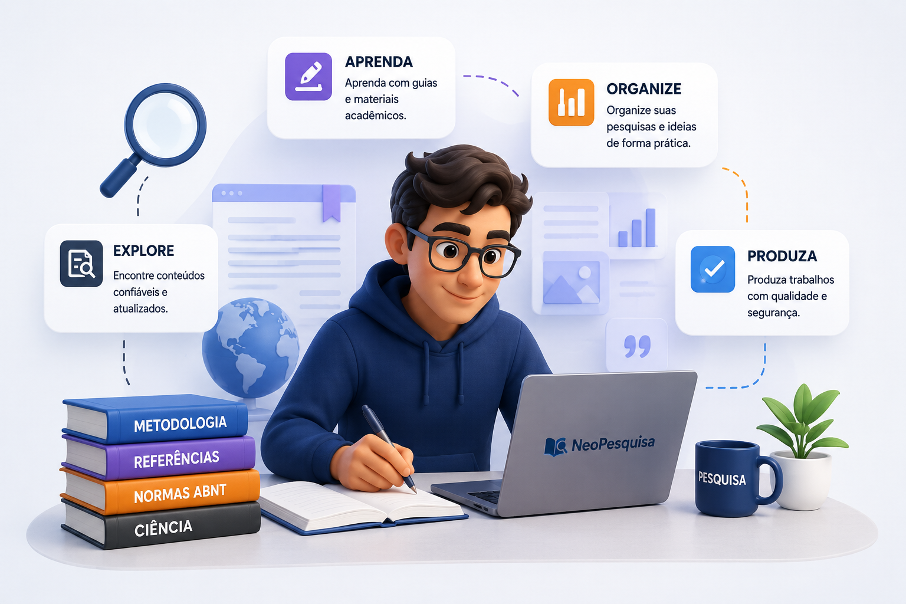

★★★★★
"A NeoPesquisa tornou o desenvolvimento do meu projeto muito mais organizado e intuitivo. Hoje consigo estruturar cada etapa da pesquisa com muito mais segurança."
A NeoPesquisa integra metodologia científica, produção acadêmica, biblioteca digital e Inteligência Artificial em um único ambiente, auxiliando estudantes, pesquisadores e professores durante todas as etapas da construção do conhecimento.

A NeoPesquisa é uma plataforma desenvolvida para tornar a pesquisa científica mais acessível, prática e compreensível, apoiando estudantes, professores e pesquisadores em todas as etapas da construção do conhecimento.
Domine metodologias científicas, normas acadêmicas e boas práticas de pesquisa.
Utilize ferramentas, referências e recursos para desenvolver pesquisas com qualidade.
Transforme conhecimento em artigos, TCCs, projetos e produção científica.
Descubra conteúdos organizados para apoiar todas as etapas da pesquisa científica, desde a metodologia até a produção acadêmica com apoio da Inteligência Artificial.
Aprenda os fundamentos e métodos da pesquisa científica.
Explorar →Conheça fontes confiáveis para fundamentar sua pesquisa.
Explorar →Aprenda a formatar trabalhos conforme as normas acadêmicas.
Explorar →Utilize Inteligência Artificial de forma ética e produtiva.
Explorar →Recursos digitais para facilitar todas as etapas da pesquisa.
Explorar →Desenvolva textos acadêmicos claros, objetivos e consistentes.
Explorar →
Desenvolvida para conectar conhecimento científico, metodologias, inteligência artificial e produção acadêmica em um único ambiente de aprendizagem.
Conteúdo organizado para desenvolver competências em pesquisa.
Uso responsável da IA como apoio ao pesquisador.
Da concepção da pesquisa até a publicação dos resultados.
Conteúdos revisados e ampliados constantemente.
A NeoPesquisa acompanha todas as etapas do desenvolvimento científico, oferecendo metodologias, ferramentas e recursos para transformar conhecimento em produção acadêmica de qualidade.
Identifique um problema ou oportunidade de pesquisa.
Defina objetivos, métodos e estratégias da pesquisa.
Busque evidências, referências e dados científicos.
Interprete os resultados e desenvolva conhecimento.
Estruture o trabalho científico com clareza e rigor.
Compartilhe conhecimento e gere impacto científico.
Aprenda os fundamentos da pesquisa, desenvolva produções acadêmicas, consulte fontes científicas e utilize ferramentas inteligentes com responsabilidade, ética e rigor metodológico.
Aprenda metodologia científica por meio de conteúdos estruturados, exemplos práticos e orientações fundamentadas na literatura acadêmica.
Começar →A NeoPesquisa foi concebida para aproximar estudantes, professores e pesquisadores de uma produção científica mais rigorosa, ética e inovadora.
Conteúdos fundamentados em metodologias, literatura acadêmica e boas práticas de pesquisa.
Materiais revisados continuamente para acompanhar a evolução da ciência e das tecnologias.
Inteligência Artificial aplicada como ferramenta de apoio, preservando o pensamento crítico do pesquisador.
Um ambiente voltado à colaboração entre estudantes, docentes e pesquisadores.
Reúna metodologia científica, inteligência artificial, referências, organização e tecnologia em um único ambiente para desenvolver pesquisas com mais segurança, qualidade e agilidade.

Conheça a experiência de estudantes, professores e pesquisadores que utilizam a NeoPesquisa para desenvolver seus trabalhos acadêmicos com mais organização, confiança e inovação.
"A NeoPesquisa tornou o desenvolvimento do meu projeto muito mais organizado e intuitivo. Hoje consigo estruturar cada etapa da pesquisa com muito mais segurança."
"A plataforma reúne metodologia científica, inteligência artificial e ferramentas acadêmicas em um único ambiente, facilitando o acompanhamento dos estudantes."
"Finalmente encontrei uma plataforma que integra referências, normas, inteligência artificial e organização da pesquisa em um único lugar."
Respondemos às principais dúvidas para que você possa começar sua jornada científica com mais segurança.